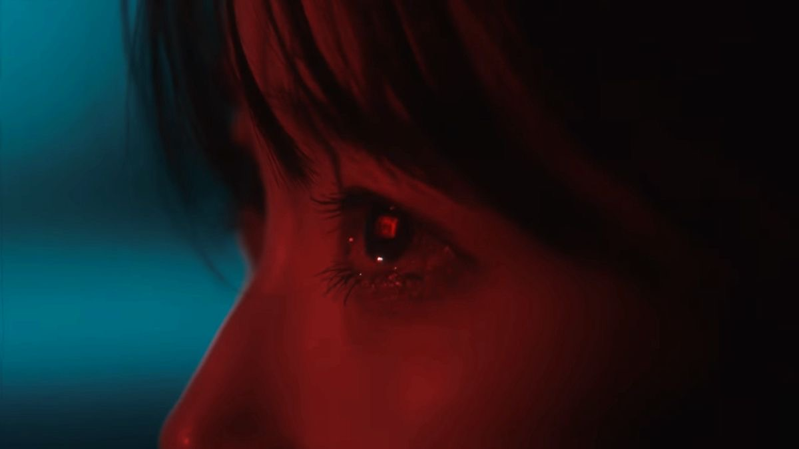

SECTION 01
ENGLISH LITERATURE
When the Young Speaks.
An original multimodal one-act play exploring voice, political awareness, family, and the importance of making informed choices.
THE WORK
ORIGINAL MULTIMODAL WORK
A story brought to life.
When the Young Speaks is an original multimodal one-act play that explores the importance of informed decision-making and the power of young voices.
Through the story of Amethyst Mae Lozano and her family, the play presents a conflict between popularity and credentials, questioning how people determine who deserves their trust.
THE ORIGINAL PLAY
When the Young Speaks
Written and performed by the members of our group.

OUR MULTIMODAL WORK